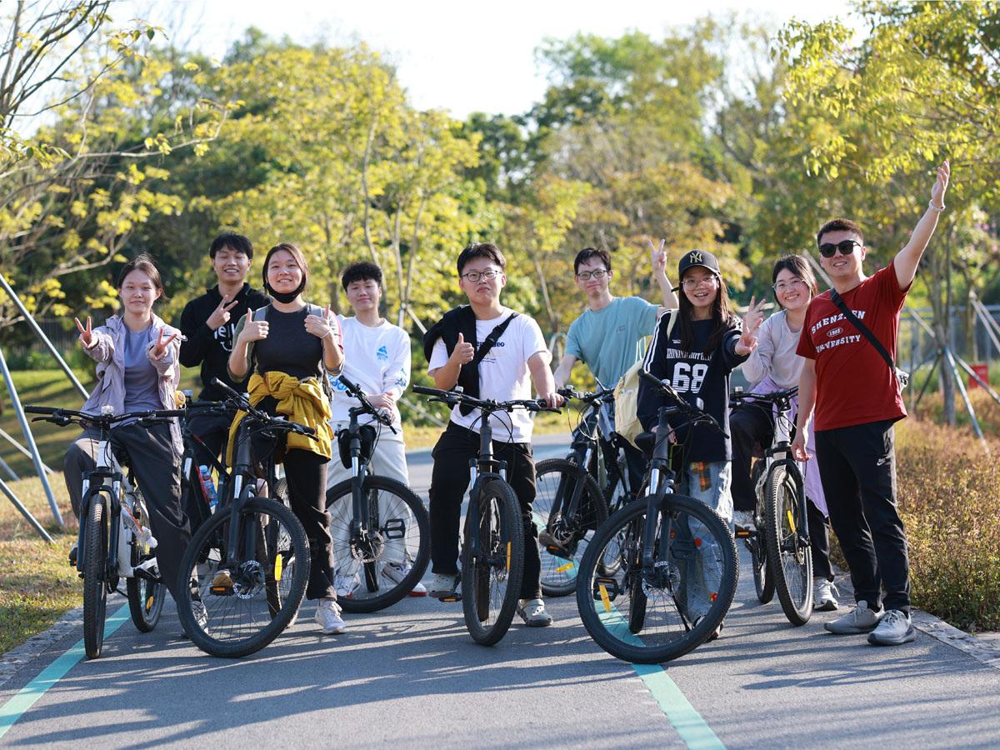
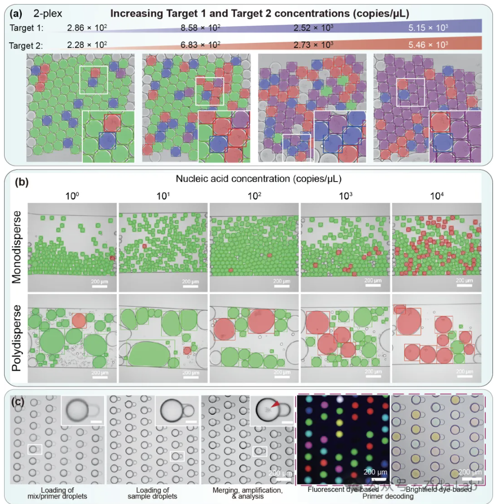
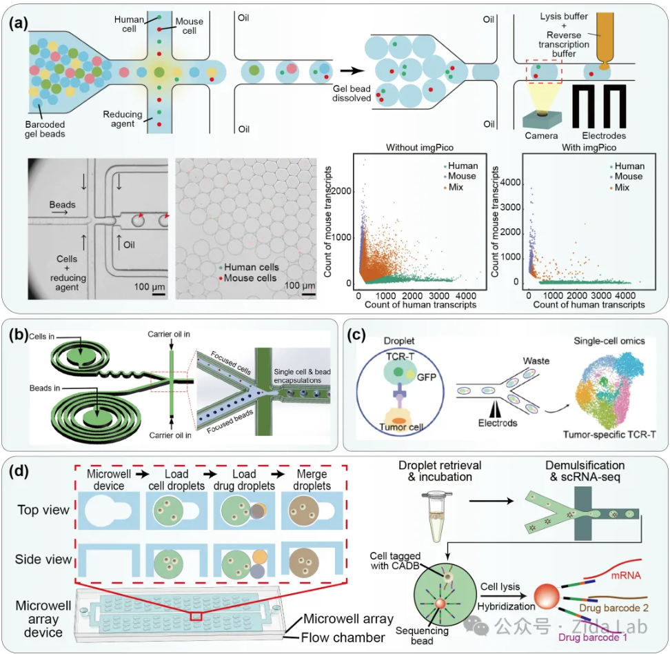

一、课题组简介

我们是谁？
李自达老师课题组长期聚焦临床体外诊断核心领域，围绕生物医学检测技术开展创新性研究。团队以微流控芯片设计与微纳加工技术为研究基石，深度融合人工智能算法等跨学科方法，重点攻克微量样本检测、高精度生物标记物分析等生物医学领域关键技术瓶颈。
课题组目前在三个维度持续产出创新成果：
（1）基于单分子检测的超灵敏免疫和基因检测体系开发；
（2）高通量单细胞组学分析系统研发；
（3）微流控芯片集成即时诊断平台构建。
研究成果可应用于癌症早筛、遗传病诊断和精准医疗等多个临床场景。
李自达
副教授、博导
深圳大学生物医学工程学院
2013 - 2018
密歇根大学安娜堡分校 · 机械工程博士
2008 - 2012
中国科学技术大学 · 机械工程学士
代表性论文
第一作者均为课题组学生。期刊均为中科院一区TOP期刊。
-
Flow-LAMP: Label-free Digital LAMP using Scatter-based Flow Cytometry on Vortex-Generated Polydisperse Gel Beads
Yuchong Zheng, Wanjun Yao, Zerui Wu, Liqun He, Weidong Zheng,* and Zida Li*. Analytical Chemistry, 2025
-
StratoLAMP: Label-free, multiplex digital loop-mediated isothermal amplification based on visual stratification of precipitate
金美池、丁婧怡、陈佳兆、李自达 等。 PNAS, 2024 (IF=9.58)
-
imgPico：Image activated pico-injection for single cell analysis
赵展陶、李自达 等。 Talanta, 2024 (IF = 6.1)
-
CoID-LAMP: Color-encoded, intelligent digital LAMP for multiplexed nucleic acid quantification
武凯、方琪、李自达 等。 Analytical Chemistry, 2023 (IF = 7.4)
-
Combinatorial perturbation sequencing on single cells using microwell-based droplet random pairing
谢润、李自达 等。 Biosensors and Bioelectronics, 2023 (IF = 12.6)
学生获奖情况
- 26届毕业生陈佳兆荣获国家奖学金。
- 24届学生金美池荣获深圳大学“名校深造奖学金”。
- 23届学生李东豪获得校级“腾讯奖学金”(前2%)。
- 22届学生陈琳喆毕业论文被评为深圳大学首届“百篇优秀硕士学位论文”。
- 2021年，课题组两位本科毕业生毕业课题均获得优秀（前20%），其中金美池论文入选百篇优秀本科毕业论文(前2%)。
就业情况
2025年
达普生物技术微流控工程师、深圳大学辅导员等。
2024年
康奈尔大学全奖博士、华为单板硬件工程师、北京大学深圳医院医学装备部。
2023年
深圳亚辉龙系统集成/芯片设计工程师、杭州霆科微流控研发工程师。
往届优秀
普门试剂研发工程师、麦科田系统工程师等。
二、研究方向
我们在研究什么？
单分子数字核酸检测新方法
打破高端医疗检测的壁垒：传统的核酸检测（如大家熟知的传染病核酸检测或基因筛查）往往依赖极其昂贵的荧光标记试剂和笨重复杂的光学仪器。这就导致很多高端诊断技术只能停留在三甲医院或是专业实验室。
我们的研究目标是“化繁为简”，利用独特的微反应体系，让扩增产物产生肉眼可见的沉淀，或者通过极其简单的图像拍摄就能完成分析。简单来说，我们正在开发更便宜、更便携、甚至无需荧光仪器的“傻瓜式”精准检测技术，希望未来能将早期癌症筛查、重大传染病确诊等高端医疗服务普及到基层诊所甚至家庭。

单细胞组学检测新方法
探寻生命的最基本单元：如果把人体的组织结构比作一杯混合果汁，传统的检测方法只能测出果汁的总体味道，却无法告诉你里面具体有多少颗草莓、多少块芒果。而“单细胞测序技术”就像是一台超级显微镜，能把果汁里的每一个细胞单独挑出来进行全面分析。
这对于寻找极其稀少的早期癌细胞、理解肿瘤为什么会耐药、以及精准研发靶向新药有着决定性的作用。我们课题组的专长，就是利用微流控芯片技术（一种在微米尺度下精准操控液体的技术），为这台“超级显微镜”打造更高效、更智能的“流水线”，解决目前单细胞分析中成本高昂、处理效率低、珍贵细胞易丢失等实际痛点。

三、学生培养体系
在 ZidaLab，你将获得什么？
1 系统性科研能力培养
我们专注课题攻关与知识提升，更致力于锻造核心竞争力：
-
独立科研素养
从文献调研到实验设计，培养发现问题、解决问题的全链条思维。
-
职场黄金技能
信息检索、逻辑思维、高效执行、跨学科协作——这些正是名企争抢的复合型人才特质。
-
职业发展加速度
往届学生均去往心仪单位（名校博士、大厂工程师等）。
2 硬核技能锻造场
每周文献精读+组会研讨，解锁前沿领域密码
严谨实验设计+数据深度挖掘，培养学术侦探思维
从细胞操作到算法建模，动脑更动手
每周汇报+学术会议演练，打造专业表达范式
温暖有光的科研共同体
左右滑动查看更多精彩瞬间
🌱 学术生态圈 (会议与交流)


🎉 活力生活与仪式感 (团建与日常)


准备好加入我们了吗？
有意愿深入了解课题组的同学，请联系李自达老师。
来信请务必附上以下材料：
zidali@szu.edu.cn
再次祝贺各位26级研究生上岸~ 期待在深大相见！